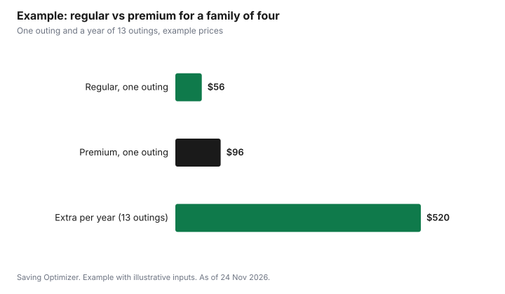

Entertainment · Canada
IMAX and Premium Formats: Worth the Extra?

IMAX and other premium formats at Canadian cinemas, such as UltraAVX, 4DX, D-BOX and VIP, cost more than a general admission ticket, and the gap is multiplied by every person in your group. The extra is usually worth it only for films shot or finished for large formats, like big action and space films, and only if you sit in a good seat. For dialogue-driven films, a regular screen on a discount day gives you nearly the same experience for much less.
Key takeaways
- Premium formats add a surcharge per ticket. Check the showtime page for your theatre, because prices vary by city and day.
- The extra matters most for films filmed or mastered for IMAX. Look for "Filmed for IMAX" or similar notes.
- A centre seat in a regular auditorium can beat a bad seat in a premium one.
- Cheap Tuesday pricing and loyalty points cut the cost of both regular and premium tickets.
- Example: a family of four pays $40 more for premium seats, or $520 more over a year of monthly outings.
Prices
Cineplex and independent cinemas set prices by location, format and day, and they change, so the reliable number is the one on the showtime page when you buy. In general, general admission is the cheapest, UltraAVX and IMAX cost more, and 4DX, D-BOX motion seats and VIP licensed auditoriums usually cost the most. Online booking can add a fee; check whether buying at the box office or with a membership removes it. Our CineClub vs Scene+ guide covers the booking fee and member pricing.
Which films benefit
- Films shot with IMAX cameras or released in an expanded aspect ratio for IMAX show more picture on an IMAX screen.
- Big sound mixes, such as action and science fiction, benefit from premium sound systems.
- Dialogue-driven dramas and comedies gain little from a bigger screen.
- Kids' animated films are a judgment call: younger children may find the volume and size too much.
Seats
Where you sit changes the experience more than many people expect. In IMAX, the centre two-thirds of the auditorium, a little behind the middle row, is usually best. Front-row premium seats can be worse than a centre seat in a regular room. With reserved seating, book early for the films you care about and accept a regular screen for the rest. VIP auditoriums are 19+ and include recliners and in-seat service, so you pay for comfort and food, not just picture.
Plan: when to pay the premium
| Situation | Pick | Why |
|---|---|---|
| Film shot for IMAX, opening week | IMAX on a discount day | Full picture, lower price |
| Dialogue-heavy drama | Regular screen | Little to gain from format |
| Family with young kids | Regular screen, centre seats | Lower cost and volume |
| Date night with food | VIP only if you'd eat out anyway | You pay for service and comfort |
| Rewatch of a film you loved | Premium | The format is the new experience |
Format checklist
- Is the film shot or mastered for this format?
- What is the surcharge per person, after any booking fee?
- Can you get a centre seat?
- Is a discount day or member price available?
- Can you pay with Scene+ points? See getting the most from Scene+ points.
Example: a family of four
These are example prices, not quotes. A family pays an example $14 per regular ticket on a weekend and an example $24 per premium ticket.

Regular: 4 × $14 = $56. Premium: 4 × $24 = $96. The premium costs $40 more per outing. Over 13 outings a year that's $520, enough for several extra trips at regular prices. Choosing premium only for one or two films a year that are made for it keeps most of the benefit and most of the savings. Our cheap movie tickets guide lists discount days.
Sources
- Cineplex showtime and theatre pages (format and pricing vary by location), checked 24 Nov 2026.
- Cineplex CineClub page (member-priced tickets and fees before taxes), checked 24 Nov 2026.
Frequently asked questions
Is IMAX worth the extra money?
It's worth it mainly for films shot or mastered for IMAX, such as big action or space films, and when you can get a good centre seat. For dialogue-driven films, a regular screen is usually enough.
How much more does IMAX cost in Canada?
It varies by theatre, city and day. Check the showtime page before you buy; premium surcharges apply to every ticket in your group.
What is the difference between IMAX and UltraAVX?
Both are Cineplex premium formats with larger screens and upgraded sound. IMAX uses IMAX's own screens, projection and sound; UltraAVX is Cineplex's own premium format.
Can I use Scene+ points for IMAX tickets?
Scene+ points can be redeemed for movie tickets at Cineplex, including premium formats, with more points needed for premium tickets. Check the Scene+ redemption page.
How can I see IMAX movies for less?
Go on a discount day, use member pricing or points, skip online fees where you can, and choose premium only for films made for it.
Researched and drafted with AI assistance and fact-checked against official Canadian sources. How we create content.
Note: Ticket prices and formats vary by theatre. Check the showtime page before you buy. Education only.